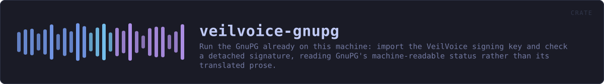

veilvoice-gnupg
Run the GnuPG already on this machine: import the VeilVoice signing key and check a detached signature, reading GnuPG's machine-readable status rather than its translated prose.
reference · the same page on GitHub
Run the GnuPG that is already on this machine.
Marker 97. VeilVoice checks a release signature itself, with a key compiled into the binary, so that somebody with no GnuPG installed is not stuck. That is a real convenience and it has an obvious circularity: the program telling you the download is genuine came out of that download.
Until now the answer to that was to print the commands and leave the running of them to the reader. That is correct, almost nobody does it, and a check almost nobody runs is a check that is not protecting anybody.
So this runs them. When GnuPG is on the machine, the signature is checked by two independent implementations -- this project's built-in one and somebody else's -- and both answers are reported. Two implementations agreeing is worth more than either alone, and two disagreeing is the loudest thing a verifier can find.
What this does not fix
Running gpg from inside the binary under suspicion does not make the answer independent of that binary. What it makes independent is the implementation: the packet parsing, the hashing and the signature arithmetic are somebody else's code. The independent invocation is still the reader typing the commands themselves, and every front end that uses this goes on printing them for exactly that reason.
Why the status lines and not the words
gpg --verify prints "Good signature from ..." in the reader's own language. Parsing that would be a verifier whose answer depends on a locale, and the failure mode is the bad one: an unrecognised string reads as "no good signature found" in one direction, or matches a translated word in the other.
--status-fd is GnuPG's machine-readable channel and it is not translated. Measured against GnuPG 2.4.4, which is where these shapes come from rather than from the manual:
good: [GNUPG:] GOODSIG <keyid> <uid>
[GNUPG:] VALIDSIG <fingerprint> ... exit 0
tampered: [GNUPG:] BADSIG <keyid> <uid> exit 1
no key: [GNUPG:] ERRSIG ... / NO_PUBKEY <keyid> exit 2
import: [GNUPG:] IMPORT_OK <flags> <fingerprint> exit 0A good signature from some key proves nothing
This is the mistake the whole thing exists to avoid making on somebody's behalf. gpg --verify reports success for a valid signature by any key in the keyring, and anybody who can hand you an archive can hand you a signature by a key they made this morning. So Gnupg::verify is given the fingerprint that is expected and compares VALIDSIG against it. A good signature by a different key is its own outcome, Outcome::AnotherKey, and it is a failure rather than a pass with a note attached.
In plain words
If you have GnuPG, this uses it, so the answer does not come only from a program you have just downloaded.
It adds the VeilVoice signing key to your keyring, checks the signature with your GnuPG, and tells you exactly what your GnuPG said. It also checks that the signature is by the right key, which is the part that matters and the part that is easiest to skip.
HOW THE CRATE FITS TOGETHER
Every arrow is a crate:: or super:: path one module actually uses, read out of the source rather than drawn by hand.
The same graph as Mermaid source
%%{init: {"theme":"base","themeVariables":{"background":"#1a1b26","primaryColor":"#1f2335","primaryTextColor":"#c0caf5","primaryBorderColor":"#7aa2f7","secondaryColor":"#16161e","tertiaryColor":"#16161e","lineColor":"#737aa2","textColor":"#c0caf5","mainBkg":"#1f2335","nodeBorder":"#7aa2f7","clusterBkg":"#16161e","clusterBorder":"#2f3549","fontFamily":"ui-monospace, SFMono-Regular, Consolas, monospace","fontSize":"14px"}}}%%
flowchart TD
n_lib(["lib.rs<br/>679 lines"])
click n_lib href "https://github.com/tilas01/veilvoice/blob/main/crates/veilvoice-gnupg/src/lib.rs" "open the source"This site loads no third-party script, so it cannot run Mermaid; the diagram above is the same nodes and edges drawn by the generator instead. GitHub renders the source below directly.
THE FILES
| File | Lines | What it is |
|---|---|---|
lib.rs | 679 | Run the GnuPG that is already on this machine. |